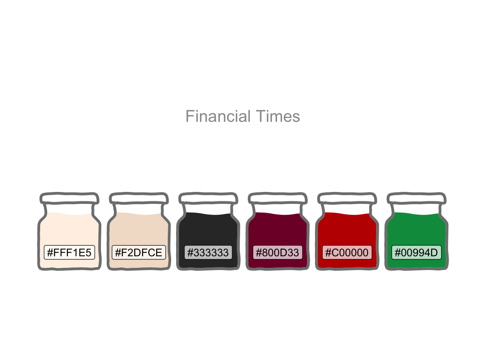

library(conflicted)
library(tidyverse)
conflict_prefer_all("dplyr")
library(readxl)
library(gt)
library(usedthese)
conflict_scout()2 conflicts:
* `filter`: [dplyr]
* `lag` : [dplyr]
The nature of employment has seen significant shifts over time. Occupations are being consigned to ‘footnotes in history’ whilst others grow driven by trends such as concern for the environment.
Producing a journal-quality table requires fine-grained and reproducible control over presentation. Surgical targeting of footnotes, capable of adapting to changes in the underlying data, is one example.
This post briefly explores the shifts in the nature of employment whilst at the same time more fully exploring the grammar of tables gt(Iannone et al. 2022): The natural companion to the grammar of graphics ggplot2(Wickham 2016).
library(conflicted)
library(tidyverse)
conflict_prefer_all("dplyr")
library(readxl)
library(gt)
library(usedthese)
conflict_scout()2 conflicts:
* `filter`: [dplyr]
* `lag` : [dplyr]In Digging Deep, the DT package is used to produce a reactable table; one with sortable and searchable columns. DT is intended as an R interface to the DataTables library, but reactivity is not yet supported in gt.
Data frames are liberally printed across all projects including, for example, a table to summarise an auto-generated overview of R packages and functions used in each project. The YAML option df-print: kable renders a nice table (with striped rows) in these cases.
For this project something a little more sophisticated is needed.
As a guiding principle, Posit packages are my first port of call. This provides a confidence in cross-package consistency, interoperability, longevity and an investment in development and support. Hence gt is the go-to package for the footnoted table further down.
As the intent is to present a summary in the style of the Financial Times, we’ll need a suitable custom colour palette.
theme_set(theme_bw())
cols <- c(
"#FFF1E5", "#F2DFCE",
"#333333", "#800D33",
"#C00000", "#00994D"
) |>
fct_inorder()
tibble(x = 1:6, y = 1) |>
ggplot(aes(x, y, fill = cols)) +
geom_col(colour = "white") +
geom_label(aes(label = cols),
nudge_y = -0.1, fill = "white"
) +
annotate(
"label",
x = 3.5, y = 0.5,
label = "Financial Times",
fill = "white",
alpha = 0.8,
size = 6
) +
scale_fill_manual(values = as.character(cols)) +
theme_void() +
theme(legend.position = "none")
The labour market data are sourced from the Office for National Statistics1.
read_data <- \(x) {
read_xlsx(
x,
skip = 12,
col_names = c(
"occupation",
"persons"
),
col_types = c(
"text",
"numeric",
"skip",
"skip",
"skip",
"skip",
"skip"
)
)
} |>
mutate(year = x |> str_remove(".xlsx") |> as.integer())
pop_df <- list("2004.xlsx", "2021.xlsx") |>
map(read_data) |>
list_rbind()There’s a hierarchy to the data, so I’ll extract the lowest level and then slice off the top and bottom occupations based on their percentage change over time.
change_df <- pop_df |>
filter(str_starts(occupation, "\\d{4} ")) |>
pivot_wider(names_from = year, values_from = persons) |>
separate_wider_regex(occupation,
c(soc = "\\d{4}", " ", occupation = ".*")) |>
mutate(change = `2021` / `2004` - 1) |>
arrange(desc(change)) |>
mutate(group = if_else(row_number() <= 10, "Risers", "Fallers")) |>
slice(c(1:10, (n()-10):n())) |>
relocate(group)The handling of footnotes is a particularly nice feature in gt: The package automatically assigns, and maintains the order of, the superscripted numbers (could also be symbols) to ensure they flow naturally. And targeting offers a high degree of control and reproducibility.
For example, two entries (highlighted light blue) in the table below use the abbreviation n.e.c.. The footnote may be targeted at rows which contain that string rather than having to manually identify the rows. And once added, any subsequent footnotes would be renumbered to maintain the flow. So, if I were to change the source datasets to different years or countries, all references to n.e.c. would be auto-magically found and appropriately footnoted.
gt_tbl <- change_df |>
gt(rowname_col = c("occupation"), groupname_col = "group") |>
tab_header(title = "UK Employment by Occupation") |>
tab_options(table.width = pct(100)) |>
fmt_number(
columns = starts_with("2"),
decimals = 0
) |>
fmt_percent(
columns = starts_with("c"),
decimals = 0,
force_sign = TRUE
) |>
sub_missing() |>
tab_spanner(
label = "Year",
columns = starts_with("2")
) |>
tab_style(
style = cell_text(transform = "capitalize"),
locations = cells_column_labels(!starts_with("s"))
) |>
tab_style(
style = cell_text(transform = "uppercase"),
locations = cells_column_labels("soc")
) |>
tab_footnote(
footnote = "Not elsewhere classified",
locations = cells_stub(rows = contains("n.e.c."))
) |>
tab_footnote(
footnote = "Count of all persons",
locations = cells_column_spanners()
) |>
tab_footnote(
footnote = "Standard Occupational Classification 2020",
locations = cells_column_labels(columns = "soc")
) |>
tab_footnote(
footnote = "Top & bottom 10 occupations ordered by percent change",
locations = cells_row_groups(groups = c("Risers", "Fallers"))
) |>
tab_footnote(
footnote = "Figures suppressed as statistically unreliable",
locations = cells_body(
columns = c(change, `2021`),
rows = is.na(change)
)
) |>
tab_source_note(source_note = "Source: Office for National Statistics (ONS)")
gt_tbl |>
tab_style_body(
style = cell_fill(color = "lightblue"),
pattern = "n.e.c.",
extents = "stub"
) |>
opt_stylize(style = 6, color = "gray", add_row_striping = TRUE) |>
as_raw_html()| UK Employment by Occupation | ||||
| Risers3 | ||||
|---|---|---|---|---|
| Industrial cleaning process occupations | ||||
| Health professionals n.e.c.4 | ||||
| Police community support officers | ||||
| Business and financial project management professionals | ||||
| Advertising and public relations directors | ||||
| IT business analysts, architects and systems designers | ||||
| Aircraft maintenance and related trades | ||||
| Quality assurance and regulatory professionals | ||||
| Officers of non-governmental organisations | ||||
| Environment professionals | ||||
| Fallers3 | ||||
| Sheet metal workers | ||||
| Process operatives n.e.c.4 | ||||
| Footwear and leather working trades | ||||
| Printing machine assistants | ||||
| Assemblers (electrical and electronic products) | ||||
| Printers | ||||
| Chartered architectural technologists | ||||
| Moulders, core makers and die casters | ||||
| Air-conditioning and refrigeration engineers | ||||
| Pre-press technicians | ||||
| Coal mine operatives | ||||
| Source: Office for National Statistics (ONS) | ||||
| 1 Count of all persons | ||||
| 2 Standard Occupational Classification 2020 | ||||
| 3 Top & bottom 10 occupations ordered by percent change | ||||
| 4 Not elsewhere classified | ||||
| 5 Figures suppressed as statistically unreliable | ||||
The above table uses one of the in-built style theme options. It looks clean and polished. But sometimes the table to be published needs a high degree of customisation to match, for example, a specific branding. gt offers this as we’ll demonstrate by attempting to replicate the style employed by the market data in the Financial Times.
gt_ft <- gt_tbl |>
tab_options(
table.border.top.color = "#FFF1E5",
table.border.bottom.color = "#FFF1E5",
table.background.color = "#FFF1E5",
table.font.size = px(10),
table.font.color = "#262A33",
heading.align = "left",
heading.title.font.size = px(20),
heading.title.font.weight = "bold",
heading.background.color = "#FFF1E5",
row.striping.include_table_body = TRUE,
row.striping.include_stub = TRUE,
row.striping.background_color = "#F2DFCE",
row_group.background.color = "#FFF1E5"
) |>
tab_header(title = html("UK Employment by Occupation ",
local_image("logo.png", height = 20))) |>
tab_style(
style = list(
cell_text(font = "Financier Display"),
cell_borders(sides = "bottom", weight = px(3), color = "#262A33")
),
locations = cells_title()
) |>
tab_style(
style = cell_text(size = px(14)),
locations = cells_row_groups()
) |>
tab_style(
style = cell_text(color = "#800D33", weight = "bold"),
locations = cells_stub()
) |>
tab_style(
style = cell_text(weight = "bold"),
locations = list(cells_column_labels(),
cells_column_spanners(),
cells_row_groups())
) |>
tab_style(
style = cell_borders(style = "hidden"),
locations = list(cells_body(),
cells_row_groups(),
cells_stub())
) |>
tab_style(
style = cell_text(color = "#00994D", weight = "bold"),
locations = cells_body(
columns = change,
rows = change >= 0
)
) |>
tab_style(
style = cell_text(color = "#C00000", weight = "bold"),
locations = cells_body(
columns = change,
rows = change < 0
)
) |>
tab_style(
style = cell_text(color = "grey40", size = px(9)),
locations = list(cells_footnotes(), cells_source_notes())
)
gt_ft |> as_raw_html()UK Employment by Occupation ![]()
|
||||
| Industrial cleaning process occupations | ||||
|---|---|---|---|---|
| Health professionals n.e.c.4 | ||||
| Police community support officers | ||||
| Business and financial project management professionals | ||||
| Advertising and public relations directors | ||||
| IT business analysts, architects and systems designers | ||||
| Aircraft maintenance and related trades | ||||
| Quality assurance and regulatory professionals | ||||
| Officers of non-governmental organisations | ||||
| Environment professionals | ||||
| Sheet metal workers | ||||
| Process operatives n.e.c.4 | ||||
| Footwear and leather working trades | ||||
| Printing machine assistants | ||||
| Assemblers (electrical and electronic products) | ||||
| Printers | ||||
| Chartered architectural technologists | ||||
| Moulders, core makers and die casters | ||||
| Air-conditioning and refrigeration engineers | ||||
| Pre-press technicians | ||||
| Coal mine operatives | ||||
| Source: Office for National Statistics (ONS) | ||||
| 1 Count of all persons | ||||
| 2 Standard Occupational Classification 2020 | ||||
| 3 Top & bottom 10 occupations ordered by percent change | ||||
| 4 Not elsewhere classified | ||||
| 5 Figures suppressed as statistically unreliable | ||||
Summarising below the packages and functions used in this post enables me to separately create a toolbox visualisation summarising the usage of packages and functions across all posts.
| Package | Function |
|---|---|
| base | as.character[1], as.integer[1], c[8], is.na[1], library[5], list[5] |
| conflicted | conflict_prefer_all[1], conflict_scout[1] |
| dplyr | arrange[1], desc[1], filter[1], if_else[1], mutate[3], n[2], relocate[1], row_number[1], slice[1] |
| forcats | fct_inorder[1] |
| ggplot2 | aes[2], annotate[1], geom_col[1], geom_label[1], ggplot[1], scale_fill_manual[1], theme[1], theme_bw[1], theme_set[1], theme_void[1] |
| gt | as_raw_html[2], cell_borders[2], cell_fill[1], cell_text[9], cells_body[4], cells_column_labels[4], cells_column_spanners[2], cells_footnotes[1], cells_row_groups[4], cells_source_notes[1], cells_stub[3], cells_title[1], fmt_number[1], fmt_percent[1], gt[1], html[1], local_image[1], opt_stylize[1], pct[1], px[5], sub_missing[1], tab_footnote[5], tab_header[2], tab_options[2], tab_source_note[1], tab_spanner[1], tab_style[10], tab_style_body[1] |
| purrr | list_rbind[1], map[1] |
| readxl | read_xlsx[1] |
| stringr | str_remove[1], str_starts[1] |
| tibble | tibble[1] |
| tidyr | pivot_wider[1], separate_wider_regex[1] |
| tidyselect | contains[1], starts_with[4] |
| usedthese | used_here[1] |
Contains public sector information licensed under the Open Government Licence v3.0.↩︎